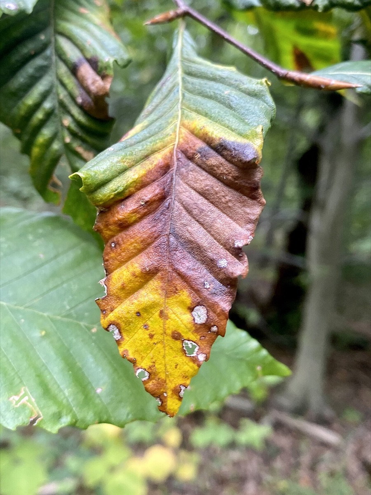
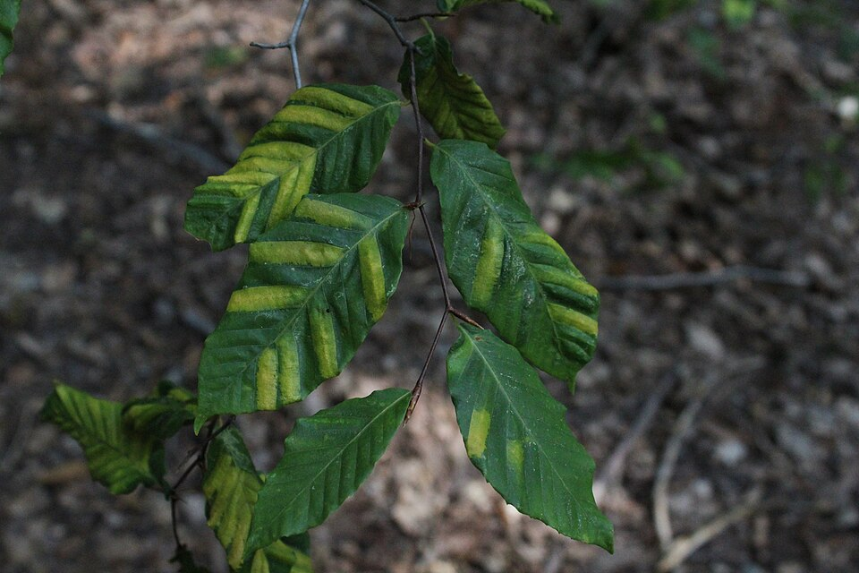

Beech Leaf Disease
Litylenchus crenatae mccannii (the leaf-gall nematode that causes it), Fagus spp. (beech)


- Also called
- BLD
- Kind
- disease · Fagaceae (host genus)
- Legal status
- No quarantine and no mandatory reporting; the page says there are currently no regulations on moving or processing BLD-infected wood. (checked 2026-10-29)
Names
Beech leaf disease (BLD). The disease is named for the beech trees it kills; the causal agent is a nematode.
Range
First found in Ohio in 2012. First detected in Vermont in 2023 in Windham County. The FPR page says it now affects six of Vermont's 14 counties (page as read 2026-10-29).
How to identify (by season; look-alikes and the key difference)
- Early stage, spring: dark stripes running parallel to the leaf veins, slightly raised and thicker than the tissue around them, most visible from the underside. Striping is present at leaf-out. Leaves often stay on the tree until winter, and some buds may abort.
- Later stage, fall: yellow striping, most visible in fall. Leaves near branch tips curl, shrivel or deform and may drop early. Dieback starts on lower branches and moves up the crown; bud and leaf production declines.
- The page says symptoms are "commonly found in understory/ sapling sized trees first."
- Look-alikes: none recorded from the page.
Through the year
Dates are typical for Vermont and shift with elevation and year; "approximate" means the source gave a season and the dates are a translation of it.
| When | What | Look for | What to do | Dates |
|---|---|---|---|---|
| May 10 to Jun 30 | leaf-out (identify) | Dark stripes running parallel to the leaf veins, slightly raised and thicker than the tissue around them, easiest to see from the underside; striping is present at leaf-out, often first on understory and sapling-sized beech. | Look at the underside of low beech leaves. If you see it, photograph it and use the county's reporting route; clean boots and tools before moving between sites. | approximate |
| Sep 15 to Nov 15 | leaf-color (identify) | Yellow striping, most visible in fall; leaves near branch tips curl, shrivel or deform and may drop early; dieback begins on lower branches and moves up. | approximate |
Habitat and spread
The page says the mode of spread is not fully understood.
Damage
The page says BLD "kills all species and sizes of beech trees." American beech is already affected by beech bark disease, so losing it would have wide effects on the forest, including the plants, animals, insects and fungi that depend on it (the page lists some).
Control (by method, timing, follow-up, what not to do)
- Prevention (the page's main advice): clean boots, tools and equipment before moving between sites. The page strongly discourages moving any plant material of the genus Fagus.
- Chemical treatments: described as "new and considered experimental." The page names two: thiabendazole (a special local needs registration in Vermont) and mono- and di-potassium salts of phosphorous acid (MDPPA). It says both showed promise in preliminary trials and does not endorse either one.
- Infested material in yards: keep it on site; compost or burn leaves (a burn permit is needed, per the page); chip or burn branches.
- Infested material in forests: leave branches on site. The page recommends limiting the movement of beech harvested from infested stands to areas already known to have BLD.
Legal status
No quarantine or mandatory reporting on the FPR page. The page says there are currently no regulations on moving or processing BLD-infected wood. It gives the Commissioner's contact information and points to a weekly-updated infestation map for reporting inquiries; it gives no reporting procedure.
Sources
- Vermont Department of Forests, Parks and Recreation, beech leaf disease page: https://fpr.vermont.gov/forest/forest-health/beech-leaf-disease (copyright 2026; no last-updated date shown).
- The page cites a 2026 USDA Forest Service pest alert.
Vermont Woodland Owner's Reference, built 2026-11-10. Rules and dates here are summaries, not legal advice; dates shift with elevation and year. Photo and recording credits · The text is by Loop Works, CC BY 4.0 (pictures and recordings keep their own licenses)